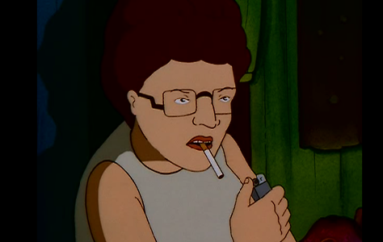
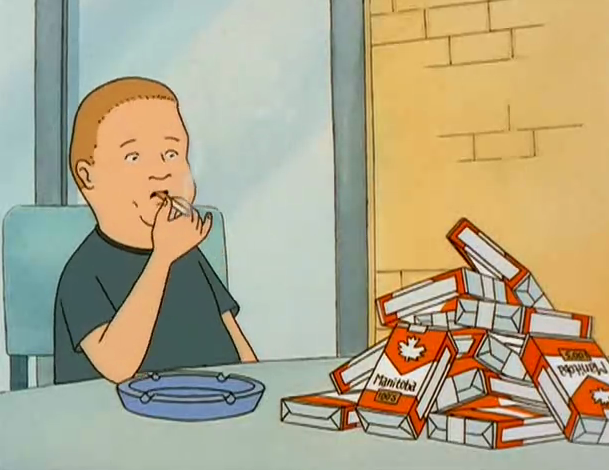

«Царь горы» (англ. King of the Hill) — американский комедийный мультсериал, созданный Майклом Джаджем и Грегом Дэниелсом. Сериал выпускался с 12 января 1997 по 6 мая 2010 г. на канале Fox Network. Третий по длительности анимационный сериал в истории американского телевидения после сериалов «Симпсоны» и «Южный Парк». За время своего существования сериал удостоился ряда наград, в том числе двух премий Эмми.
Патриархальный семьянин, заместитель менеджера «Стриклэнд Пропан» и продавец «пропана и сопутствующих товаров». Хэнк помешан на газоне у своего дома, пропане и команде по американскому футболу Dallas Cowboys. Он чувствует дискомфорт при упоминании близости и сексуальности, но у него здоровые отношения с женой, а также с остальными членами его семьи. Его фирменный вздох в состоянии дискомфорта или раздражения, его возглас «Bwah!»(«Мда»), когда он поражен, шепот «ugh» («Ф-фу»), когда он испытывает отвращение, и фраза «Вот что я вам скажу!» служат основой множества гэгов. Кроме того, когда кто-то злит Хэнка, он часто восклицает «Я надеру Вам задницу!», хотя на деле редко осуществляет угрозу. Он старается эмоционально дистанцироваться от всех членов семьи, однако не скрывает чувств в отношении своей старой собаки, бладхаунда Ледибёрд. На затылке имеет татуировку с надписью «Bill».
Хэнк женат на Пегги Хилл, замещающем учителе испанского языка, который она плохо знает и понимает (в том числе, фонетически искажает название языка до «эс-пух-Нол»). Пегги также является независимым обозревателем газеты, агентом по недвижимости, нотариусом, и чемпионом по игре в буггл (вариант игры, в России известной как «наборщик»). Она часто проявляет свою наивность и высокомерие, у неё завышенное мнение о своём уме и внешности. Она считает себя хорошо осведомленной, умной и крайне физически привлекательной, хотя время от времени её большие ступни заставляют её смущаться или комплексовать. Чаще всего Пегги утверждает, что все хорошие идеи принадлежат ей.
 У Хэнка и Пегги есть сын, Бобби Хилл (в одной из серий он произносит своё имя как «Роберт»). Ему 13 лет и он страдает избыточным весом. Мечтой Бобби является карьера комика. Хотя он не особенно привлекателен или умён, у Бобби отличное чувство собственного достоинства, он не стыдится своего тела и постоянных провалов в спортивных и прочих мероприятиях. Бобби недостаёт спортивного мастерства его отца, и он не особо любит спорт, хотя, в отличие от отца, отлично умеет стрелять из ружья, что использует его дед-ветеран как повод для унижения Хэнка; хоть он и участвовал в некоторых соревнованиях, его не включили в команду по американскому футболу Средней школы Тома Лэндри. Он владеет чувством юмора, что не нравится Хэнку, более собранному и консервативному человеку. Бобби увлекается вещами, присущими больше женскому полу: приготовлением пищи, высокой модой и куклами, что заставляет Хэнка нервничать и оказывать на Бобби сильное давление. Дискомфорт Хэнка при созерцании наклонностей Бобби — постоянно повторяющийся мотив сериала.
Мультсериал не позиционируется, как детективная драма, с элементами бесконечного курения. «Царь Горы» повествует о жизни обычной семьи из среднего класса, живущей в типично американском городке. Сюжеты в сериале затрагивают современные темы, такие как отношения отцов и детей, дружба, верность и справедливость. Отличительной чертой сериала является комическое отображение взглядов американцев на жизнь и правил, по которым они живут.
А теперь, после этих "тяжелых шуточек" самое время отдохнуть